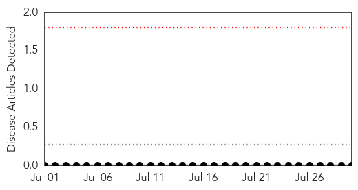
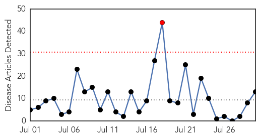
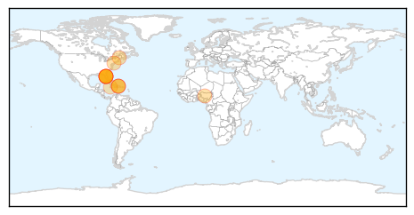
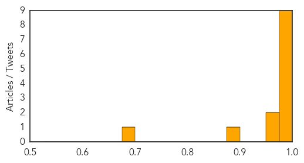

Mumps
30-Day Web Trend
0 alerts, 0 warnings

30-Day Twitter Trend
0 alerts, 0 warnings

Article Locations

Article Confidences

Top Articles:
-
No articles found for Jul 30, 2014
Top Tweets:
-
No tweets found for Jul 30, 2014
Chikungunya
30-Day Web Trend
1 alerts, 0 warnings

30-Day Twitter Trend
0 alerts, 0 warnings

Article Locations
Article Confidences
Top Articles:
- 1.000
- Caribbean mosquito-borne virus strikes St. Louis County woman : Lifestyles
- 1.000
- Maine has first two cases this year of chikungunya
- 1.000
- The Hot Zones: A Year in Review of Travel Illness
- 0.999
- Mosquito-Borne Disease Hits US Mainland
- 0.998
- CDC Reports More Cases of Chikungunya
- 0.993
- 25 New Jersey residents test positive for Chikungunya virus
- 0.992
- Two Mainers who recently visited Caribbean sickened by chikungunya virus — Health — Bangor Daily News — BDN Maine
- 0.992
- Mosquito-borne virus a concern in soggy state
- 0.985
- Nasty bugs sicken more in Jacksonville, including this year's first case of 'flesh-eating bacteria'
- 0.957
- Maine resident diagnosed with mosquito-borne virus
- 0.956
- Here comes chikungunya: The painful, mosquito-borne virus is continuing its assault on the U.S.
- 0.880
- NCSC Educating Members About Chikungunya
- 0.682
- Surgeon General Issues Skin Cancer Warnings About Tanning
Top Tweets:
-
No tweets found for Jul 30, 2014